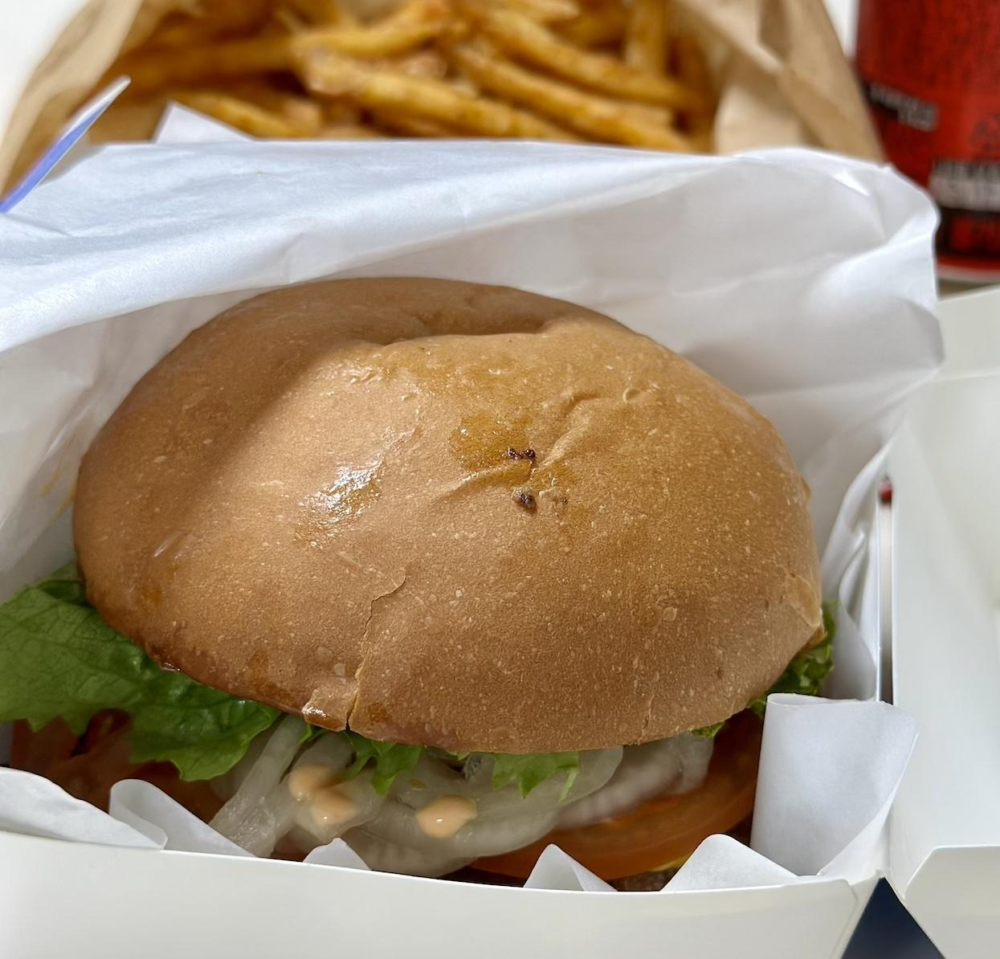

Se7en Patty Burger의 레투스 안녕 버거에 관한 기록
수제 버거가 예전에는 비쌌다지만 요즘은 대형 프랜차이즈 버거의 가격이 계속 올라가더니 이제는 수제버거가 그렇게 비싸다는 느낌이 안 드는 요즘이다. 물론 수제버거를 시켜 먹겠다는 명분 중 하나일 뿐이다. 어쨌든 그래서 오랜만에 패티 7장 버거로 유명한 Se7en Patty Burger(세븐패티버거)의 Lettuce&Onion Burger, 한글로 '레투스 안녕 버거'라는 요상한 이름의 버거를 세트로 주문했다.
사소하지만 왜 '레투스 양파'가 아니라 '레투스 안녕'인지 좀 궁금하긴 하다.
 레투스 안녕 버거 세트인데 왠일로 콜라가 피신하지 않고 있다
보다시피 역시 포장이 잘 된 수제버거의 번은 정말 아름답다. 배달로 왔음에도 이렇게 완성도 높게 도착한 것에는 박수를 치고 싶다.
'레투스 안녕 버거'는 소고기 패티와 상추, 양파, 체다치즈가 들어간 버거다. 사실상 가장 기본적인 구성인 셈이다. 다만 양상추가 아닌 상추라는 게 특이점이다.
그 특이점 때문인지는 잘 모르겠지만 맛은 다른 버거에 비하면 좀 강렬한 양파 초절임 맛에 사로잡힌다. 좋게 말해서 상추와 양파 그리고 산미로 소고기 패티의 느끼함을 싹 잡아준다. 나쁘게 말해서 소고기 패티 맛이 잘 안 느껴질 정도로 좀 과한 느낌도 있긴 하지만 말이다.
풍부한 야채는 확실히 식감을 잘 살려준다. 푹신한 번에 이어 아삭한 야채가 왕창 씹히고 그리고 패티가 마무리로 씹는 식감을 부여한다. 다만 패티가 좀 더 두꺼웠으면 좋겠다라는 느낌이 들기도 했는데 아무래도 강렬한 산미에 패티 맛이 묻히는 것처럼 식감도 그렇게 묻히는 느낌이었다.
감자튀김은 짭잘하고 바삭하긴 했는데 여기에도 약간의 산미가 느껴진 건 좀 독특했다. 그리고 양이 좀 많았는데 가격을 생각하면 많은 게 당연할 지도 모르겠지만 세트는 1인분이 기준이 되어야 할 테니 차라리 양을 좀 줄이고 가격도 좀 저렴하게 하는 게 어떨까 하는 생각이다.
결론
안 좋게 평가한 것 같지만 사실 맹점이 하나 있다. 이 집은 패티 7장 버거가 사실상 시그니처 메뉴다. 즉 패티가 많으면 많을 수록 더 맛있을 수도 있다는 말이다. 그래서 다음엔 패티 한 장을 추가해서 한번 더 시도해 봐도 되지 않을까 하는 생각이 들었다. 다른 패티가 두 장 이상인 버거는 오히려 패티 맛이 너무 과해서 불편하다는 평가를 많이 하긴 했는데 이번엔 반대 방향의 평가를 하게 된 것도 좀 신선하다. 다만 이번에 시킨 메뉴에 한한 이야기라는 점은 주의하자.
다음에는 다른 메뉴를 시도해 봐야겠다. 사실 이 메뉴만 끌려서 몇 번 째 시켜 먹었는지 잘 모르겠으니 말이다.
결론적으로 다시 시켜 먹을 생각은 있다. 같은 메뉴의 구성을 다르게 하거나 혹은 다른 메뉴를 골라보면 제대로 평가도 가능할 것 같다.